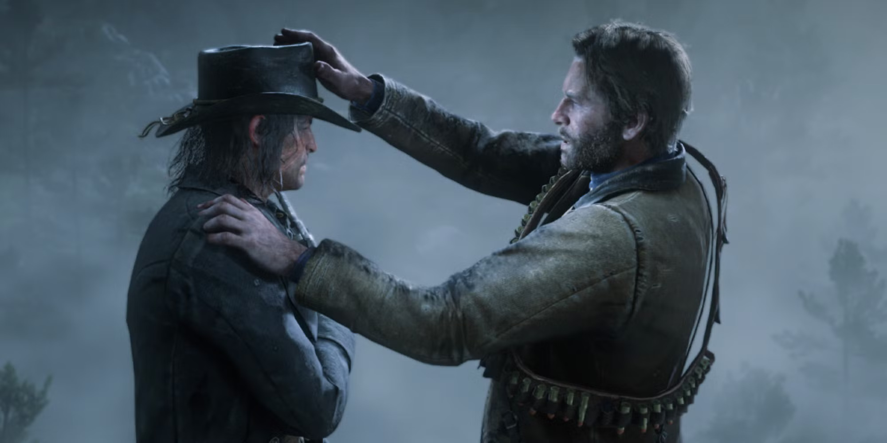

Introduction
Red Dead Redemption 2 is an epic tale of life in America's unforgiving heartland. Set in 1899, the game follows Arthur Morgan, a member of the Van der Linde gang, as they struggle to survive and make a living in a rapidly changing world.
Experience stunning visuals, an open world full of exploration, and a gripping storyline that keeps you on the edge of your seat.

Gameplay
The game focuses on Arthur Morgan, a member of the Van der Linde gang, and takes place during the decline of the Old West. The narrative unfolds as you complete story-driven missions. Main missions move the plot forward, but you can also engage in side missions, such as helping strangers, bounty hunting, or robbing trains.
The game takes place in the late 1800s in a fictional version of the American frontier, with sprawling landscapes ranging from snowy mountains to dense forests, and vast deserts. Players can freely explore the world on foot or by horseback. There’s a day-night cycle, weather changes, and wildlife that adds a layer of realism. Side activities include fishing, hunting, treasure hunting, and gathering herbs, and you can interact with a dynamic world full of NPCs and random events.
Arthur Morgan’s skills improve over time, which include health, stamina, and Dead Eye abilities. These abilities can be upgraded by completing certain activities or using specific gear.
Players can also customize Arthur’s appearance and gear, including clothing, weapons, and personal items like his hat, boots, and beard. This offers a layer of personal identity to the character.
The game is packed with detail: the weather can change unpredictably, and Arthur’s appearance changes over time based on actions (e.g., hair grows, clothes get dirty). The AI is highly responsive, with NPCs remembering your interactions, and the world feels alive due to environmental sounds and dynamic events.
The game has a detailed law enforcement system. If you commit a crime, you’ll be branded as a "wanted" criminal, and lawmen will chase you down, with bounties placed on your head. You can choose to either flee, bribe the sheriff, or go on the run. Alternatively, you can clear your name by paying off the bounty or evading capture for a long period.

My Experience on Red Dead Redemption 2
Red Dead Redemption 2 was a game I liked because of the missions, the gameplay, the quality and the overall fun game to mess around with. I would cause chaos in the city and max out my bounties in each state and try to get the bounty hunters on me. Other than that, I would also try to max each one of my horse bonding and treasure hunts. There is also Red Dead Online, but I would prefer the story in my opinion. I love the characters, especially Arthur Morgan being the protagonist and Micah being the antagonist and the rest of the Vanderlinde gang. The realism of the game is absolutely fantastic, each state having a mountain and forest, a swamp and wild west type of scenery. Overall Red Dead Redemption 2 is a game I would recommend you guys should play.
There are a few downsides to Red Dead Redemption 2. It can get boring when doing nothing but some of the missions can make you rage, especially the challenging ones. The lawmen can be very hard to flee and the amount of deaths I got from them gives the game a bit of a challenge. The game can be at a slow pace during the early chapters and the first epilogue.
